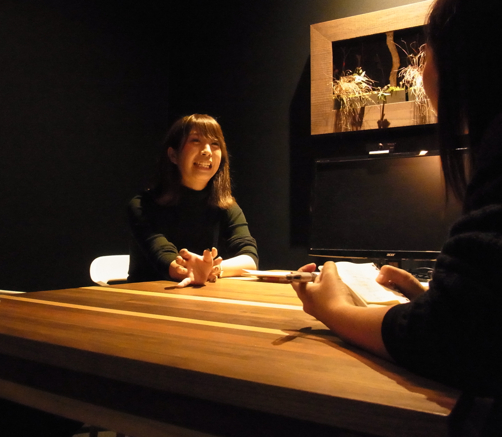
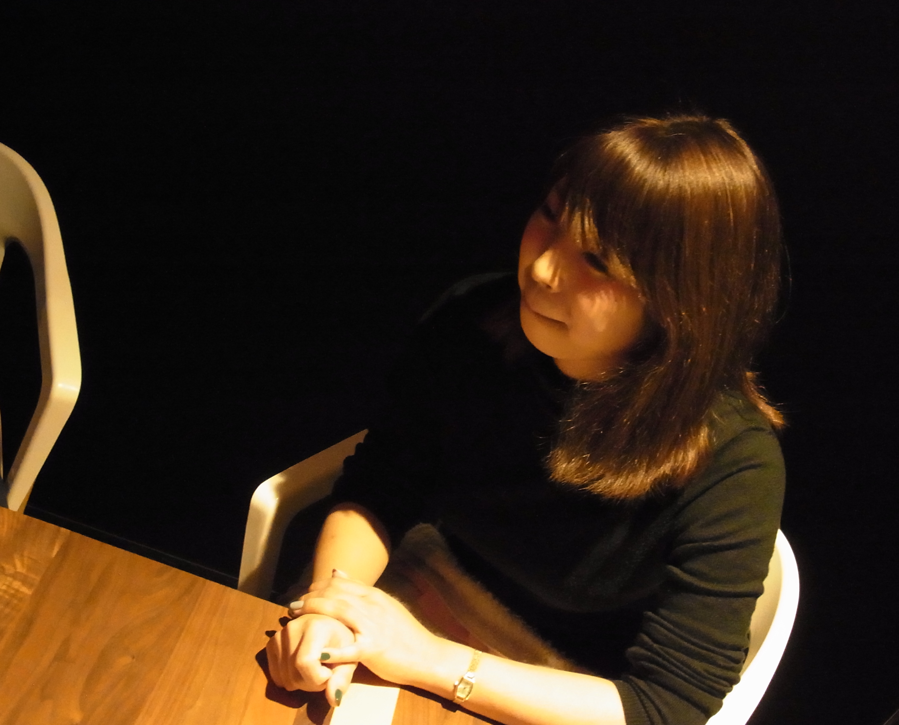
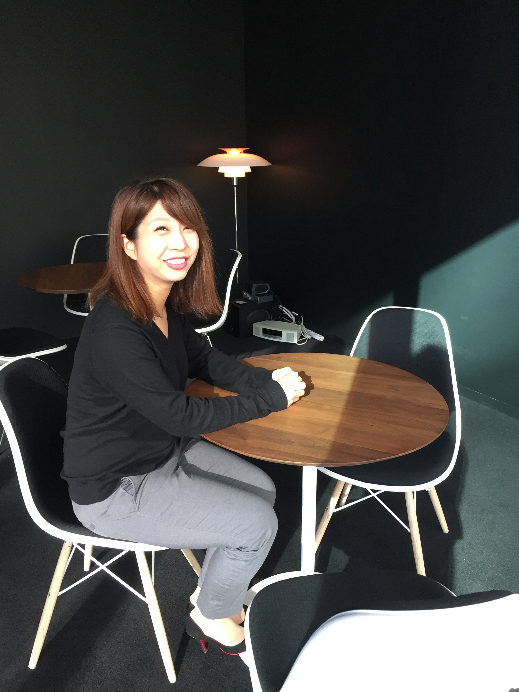

ー土井さんは、本当にハッピーオーラがすごくでていて、
以前からインターン生一同いつかお話をお伺いしたいと思っておりました（笑）
早速ですが、仕事がない日は何をしていますか？
そうなんですね（笑）
仕事がない日に仕事のことを考えるのが好きではない方なので、
休日は料理をしたり、どこかに遊びに行ってることが多いですね。
オンとオフをきっぱりと分けたいです。
あとは、結婚式が近づいてきたのでその準備をがんばっています！（笑）
破談にならなければいいですが（笑）
ー学生時代は何をしてましたか？？
主に建築関係を学んでいました。
余談ですが、実はメディカル大阪の兵庫・京都チームの山本さんと同じ大学で、
同じ学部学科に所属していました（笑）
具体的な内容としては、建築のための模型を作るようなことが多かったですね。
課題で忙しくて学校に泊まり込んでやっていることもありましたね、、、
学業以外ではアカペラサークルに入っていたのと、バイトは4年間スタバで働いてました。
スタバのバイトは本当に楽しかったのを覚えています。
ーどういった軸で就活をされていましたか？
結構人と話すのが好きだなとスタバのバイトを通して気が付きましたので、
人とコミュニケーションを取るような仕事につければいいなと考えていました。
それがきっかけで人材業界に興味を持ち始めて、
就活ではリクルート系列を片っ端から受けはじめました。
最後にリクルートキャリアと前職と迷いましたが、
会社は若いし、人と違うことをやってみたい、という学生ならでは判断軸で考えた結果、
60人ほどの規模の会社である前職を選びました。
正直な話、リクルートならいつでも入れるかなと思ったので（笑）
それが就職活動の最大の誤りです（笑）
ー前職はどんなお仕事をされていたのですか？
前職は、フィリピン人の方に特化した介護職の人材派遣をやっていました。
事業内容としては、私の会社で登録のあったフィリピン人の方にヘルパー2級を取っていただき、
その方達を施設に派遣するといった仕事です。
やっぱり、日本語の能力がそれほど高くない人たちを、高い金額で派遣させるのは大変でしたし、
営業人数も少ない中で売り上げを立てないといけなかったのは、とてもきつかったです。
その上同期もいなくて、上の先輩も私とは年が離れていたので、、、
そこで1年頑張ったというのもあり、レバに転職できたんですけどね（笑）
ー土井さんは常に元気ハツラツとしたイメージがあるのですが、
土井さんのモチベーションを維持する秘訣って何ですか？
私から自発的にモチベーションを維持しているというよりも、
レバのメンバーがいるからこそモチベーション高く頑張れているというイメージですね。
レバはいい人が多いので、もっと言えば事業部の人たちがいい人ばかりなので、
どんな時でも励ましてくれて、頑張ろうという気持ちにみなさんがさせてくれます。
ですのでいつも楽しそうに仕事をさせていただけているのだと思いますね。
ーレバの中で尊敬している方はいらっしゃいますか？
ヒューマンキャピタル(以下HC)事業部、事業部長の間山さんですね。
間山さんとは、転職活動の際の面接で初めてお会いしました。
間山さんはとても早口で、畳み掛けるようにお話をされたのを覚えています（笑）
面接が終わった頃には、間山さんに圧倒された私は、緊張のせいか喉がカラカラになっていましたね（笑）
なぜ間山さんを尊敬しているのかというと、
HCの事業を大きく軌道に乗せて、私たちの働き方を楽にしてくださったからと、
私をここまで成長させてくれたからです。
昔のHCは5〜6人しかいなかったので、今のような分業化が進んではいませんでした。
そのときは流入対応から面談、流入を確保するための広告の構成などなど、
どこかを切り出すということなく、全てを自分たちで行なっていました。
なので終電で帰ることが当たり前で、先輩はよくタクシーで帰っていました。
私はタクシーなんかにお金を使いたくなかったので、絶対終電には飛び乗っていましたが（笑）
その状態から今は従業員が30人ほどまでになり、
7時〜8時には帰ることができる事業にまでなりました。
そんな事業になるまで牽引してくれて、働き方を楽にしてくれた間山さんには本当に感謝していますし、
尊敬させていただいています。
また、私はHCから人事に移り、次にまたHCに戻ってきているのですが、
その他事業部に映る希望を聞いてくれた上に、戻ってきたいというわがままも聞いてくれた間山さんがあってこそ、
私はここまで成長できたのだと思っています。
その点でも感謝してもしきれません。
ー直近の目標を教えてください。
直近でいうとまだ今のところメディカルの兵庫・京都チームに貢献できていないので、
まずはクォーター達成を目指すのと、
できればあと3ヶ月はただ目標を達成するだけでなく、ハイ達成を目指していきたいです。
それに加えて、私自身これまでHCや人事では何度か社内表彰をしていただいたことがあるので、
メディカルでも活躍し、表彰をしていただけるようになりたいです。
ー長期的に見て、将来的にどうありたいですか？
この先も長くレバで働き、活躍し続けたいと思っています。
私は、起業意識とかは全くなくて、腰を据えて長く働きたい安定タイプなんですよね。
レバはベンチャーだけどいい意味で保守的だと思っていて、
社員を危険にさらすことはなく、このまま安定的に成長してく企業だと思っています。
なのでこれから先も長くレバで活躍したいと思っていますし、
今後産休をいただき、産休から戻ってきた後も、
「ブランクがあってもどの部署でも活躍してくれそうだよね」と言われるような
スキルの高い人にもなりたいです。
その意味ではリーダーとしての経験も今後積みたいと思っていますし、
チャンスがあれば積極的に手を上げていきたいと思っています。
ーそうなんですね。様々なお話、ありがとうございました！
では最後にインターン生に一言お願いします！！
いきなりのんびりとした学生生活から、週５でばりばり働くという変化は、
正直かなりしんどいと思います。
ですので、誰もがいうようなことですが、今のうちに遊んでおいてください！（笑）
旅行に行くなどして、働くまでに心身ともに充電しといたほうがいいです。
ありきたりなアドバイスですが、誰もがいうからこそ本当だと思ってほしいです！
応援してますので、4月からは頑張ってくださいね！
ーまずはいつも通りですが、山下さんのお人柄をお伺いしたいと思います！
山下さんの趣味や好きなものって何ですか？？
好きなものは音楽が好きです！
聞く方が中心ですが、カラオケにはよく行きます！
それと三代目 J Soul Brothersは大好きです（笑）
ファンクラブにも入ってますし、LIVEにもしょっちゅう行きます。
それが私の生きがいです（笑）
あとは、漫画も大好きですね。
最近は東京タラレバ娘にハマっていました。
東京タラレバ娘は主人公の女の子があれこれと妄想ばかりで生きてきたら、気づけば30代になってしまった。
という設定なのですが、30代になった場合のことを色々と考えさせられて、
なんとも言えない気持ちにさせられたので、すぐにマイブームからは消えましたね（笑）
あ、ちなみに彼氏は急募です。
ーどんな学生時代を過ごしていたのですか？
一般的な学生をしてましたよ。
サークルは全く行ってなかったのですが、バイトをしているか遊んでいるかの学生生活を過ごしていましたね。
最初のバイトは焼肉屋でした。働いてみて合わないと思ったので3ヶ月でやめましたが（笑）
次は化粧品や雑貨を販売しているお店で働いてみたり、イオンモールにあるようなショップ店員などもしてました。
それで最終的に着地したのがアパレルのウィーゴーです（笑）
想像できると思うのですが、「いらっしゃいませーーー！！！」って
めちゃくちゃ声出してましたね（笑）
仕事にやりがいを感じなくなった新卒入社の会社

ー山下さんはレバに中途でご入社されていると思うのですが、
そのような学生生活をお過ごしになって、その後新卒ではどんな会社に入られたのですか？
新卒ではブライダルに進みました。そこでは2年9ヶ月ほど勤務してましたね。
ブライダルはとてもやりがいのある仕事でした。
その人にとって一生に一度の大イベントに携われて、
成功すればお客様の喜んでる姿や感動して泣いている姿を見ることができます。
私も最初はそれにとてもやりがいを感じ、バリバリと働いていたのですが、
2年目に差し掛かったあたりで転職を考え始めました。
転職のきっかけは2つあって、まず1つ目がその会社で働く上で理想像が無くなったことです。
2年目に差し掛かったタイミングで先輩がほぼやめてしまいまして、
私の上には1人しかいないようになり、日によっては私が一番上として働く日が増えまして、
そこでまずプレッシャーをとても感じながら働くことが多くなりました。
仕事は好き、同期も好き、会社も好きでしたが、
目指す理想像としての先輩がおらず、目標を失ったタイミングでした。
2つ目に、将来への不安です。
ブライダルはとても回転が速い業界な上に、
私の会社は一般的なブライダルの会社と比べて低価格が売りで、それを数で担保するようなビジネスモデルだったので、
とにかく次々に新しいことに手をつけないといけないような働き方でした。
それって確固として自分のスキルとして身につくものが少なく、
とにかく量を速くこなすことばかりに注力しなくちゃいけなくて。
そこでふと自分にスキルとして残っているものは何だろうと考えた時に、
特にこれといって思い浮かぶことがなく、とても将来に不安を感じました。
この二つが原因で、思い悩んで働いているうちに仕事自体に全くやりがいを感じなくなった上に、
気づけばそもそも仕事にやりがいを求めなくなっていました。
失っていたやりがいをとりもどせたレバへの転職

ーそんななかでなぜレバを選んだんですか？
結論をいえば人にひかれたからですね（笑）
転職活動ではDODAやハローワークに登録したのですが、
仕事にやりがいを求めること自体諦めていたので、
担当の人にはやりがいはいらないと言い続けていました（笑）
「本当にいいんですか？」って何度も考え直すように勧められましたが（笑）
最終的には営業職を勧められ、紹介されたのがレバ。
勧められた時は、人材会社で働きたいや看護師さんに携わりたいといった思いは全くなかったのですが、
面接で森口さんとお話しして、一瞬でこの人の下で働きたい！！！
って惹かれちゃいましたね（笑）
人の話を引き出す力や理解する力がすごくいし、人としても尊敬できる方だなって感じました。
この人本当にステキな人！って（笑）
ー森口さんとバラバラになった時はどう感じましたか？
はじめは結構へこみました。（笑）
誰のために働いてるんやろうみたいな。。。。
森口さんのために数字とるみたいな感じだったので（笑）
ー私たちからみてもいつも一生懸命働いている山下さんですが、どんな所にモチベーションをおいて頑張ってるんですか？
仕事に対してはあんまり目標がなくって、誰かのために働きたいという気持ちが強いです。
それは前職のブライダルの時の考え方なんですよ。
この人のため、チームのために頑張るみたいな所ですね。
今はチームやリーダーのために数字残したいとか。
あんまり評価されたいっていうのはないですね。
ー今生活の中で仕事ってどれくらいの位値付けですか？
9割！直さないとと思ってるんですけどね。友達は好きだし、
プライベートとか土日はもちろんそっち優先だけど、日々は仕事があってのモチベーションかなぁ。
ほんまは5・5くらいが理想ですね～。彼氏もいないし（笑）
母のように仕事で輝く人になりたい
ー目標とかあんまりないとかおっしゃてたんですかど、
とはいえこうなりたいみたいな目標はありますか？個人的な夢でも大丈夫です。
結局リスペクトしてるのは親ですね。母は学校の先生として仕事ばかりしていて、
全然家にいてくれなかったので、昔はこの人みたいにはなりたくないってずっと思ってました。
だから専業主婦になりたいってずっと思ってました(笑)
でもいざ自分が働いてみて母のすごさを理解しました。
だから今は母みたいになりたいって思ってます。
家庭に対する思いも強いですし、将来は絶対幸せな家庭を築きたいというのが目標であり夢ですね。
ーずっとレバにいたいと思いますか？
思っています。レバは本当に人に恵まれてるなと思います。
レバの人が好きなので、どんな形ででもレバで働き続けたいなと思ってます。
気になる山下さんの結婚したいお相手とは、、、、

ーちなみにですが、レバの大阪支店で結婚するなら誰がいいですか？
汐田さん！！！！！！！！(笑)
最初は汐田さんのことをめっちゃ怖いと思っていたましたが(笑)
でも入社してすぐに汐田さんに助けられたことがあるんです。
当時、見た目から誤解されることが多く、自分をあまり出せずにいました。
レバに入社した当初は今のキャラを前面に出せなくて、その上仕事も大変だったので、
しんどく感じていた時期があったのですが、そんなときに突然汐田さんがご飯に誘ってくれて。
前職も偶然同じブライダル業界で、唯一の同年代だったので、
仕事の悩みとか色々相談してました。
「仕事楽しい？自分だしたら？そんなんで嫌うやつ絶対いてないし。」
「仕事楽しくないと意味ないから、もっとキャラ出したほうがいいよ」って言ってくれたんですよ。
その一言ですごい救われて、泣きました（笑）
その一言があったから今があると思うから、めっちゃ感謝しています。
ーいい話ですね、、、。では最後にインターンに一言ください！
私はインターンとかやってなかったけど、今のインターン生活はすごい糧になると思うから、
それは一生懸命取り組んでください！
あとは、いろんな人と喋ったほうがいいと思います。
考え方がいっぱいあって、おもしろいなぁと思いますよ！